The same ring from four sides.
data-kui="carousel-3d tilt:12deg target:.card spin:32s hover:none pause:.rings-pause lightbox:true"
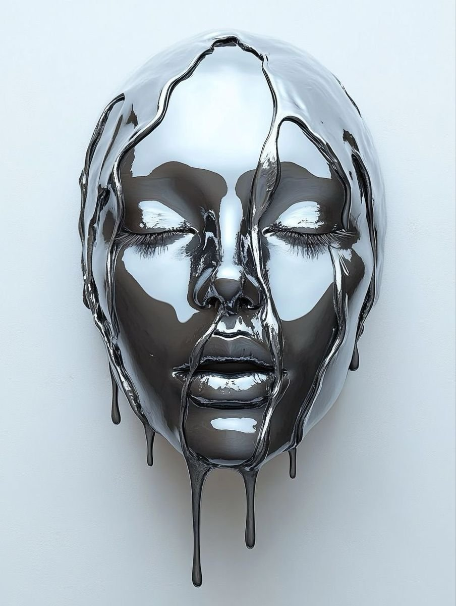
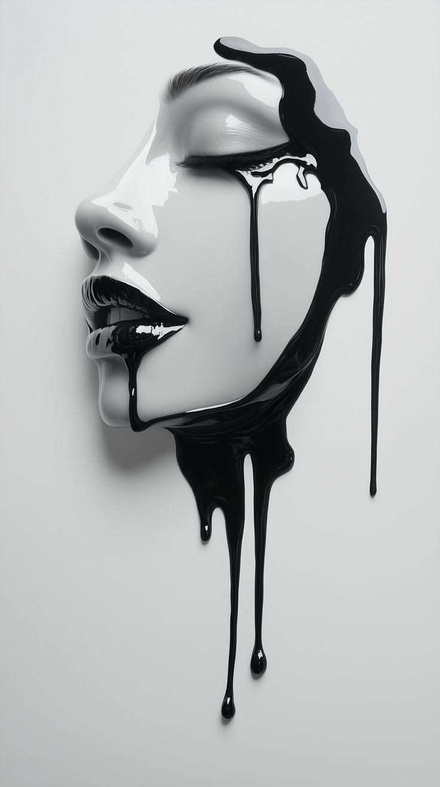
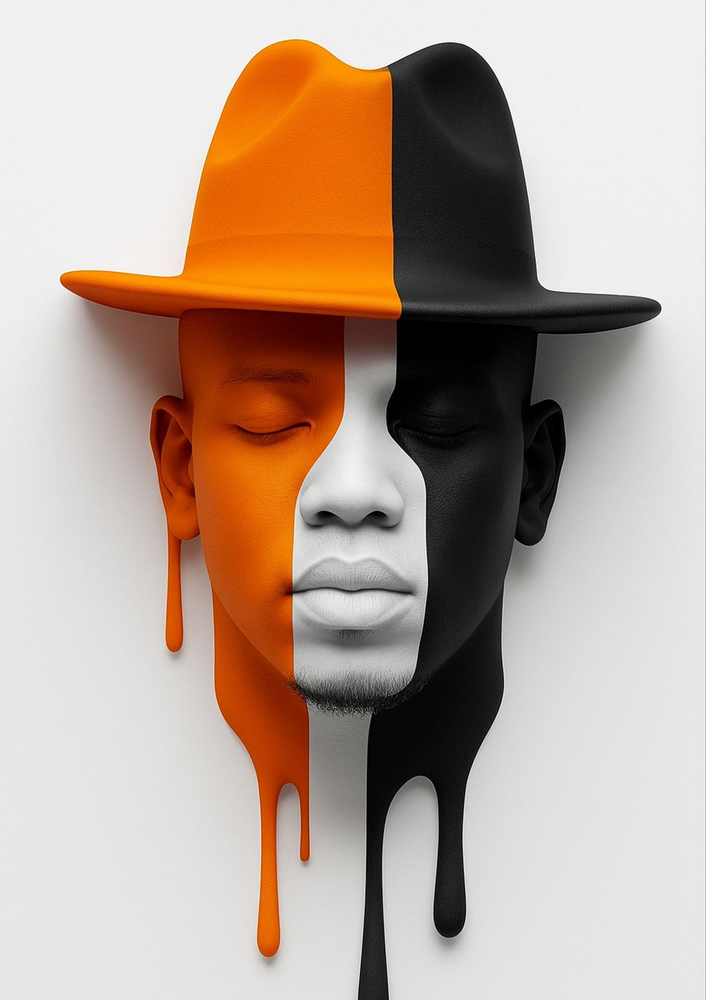
top · carousel-3d-high
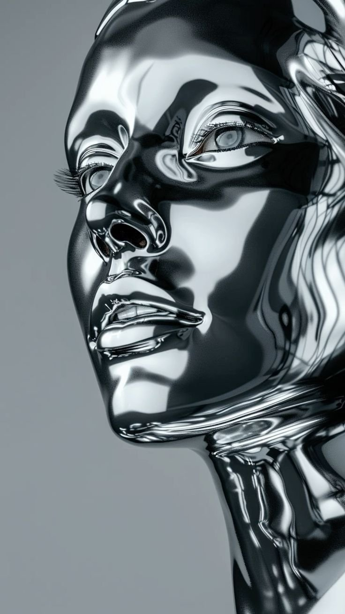
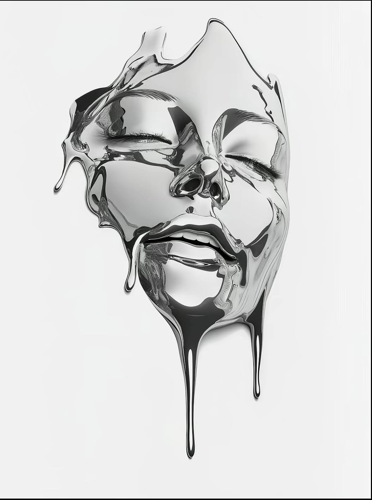
front · carousel-3d
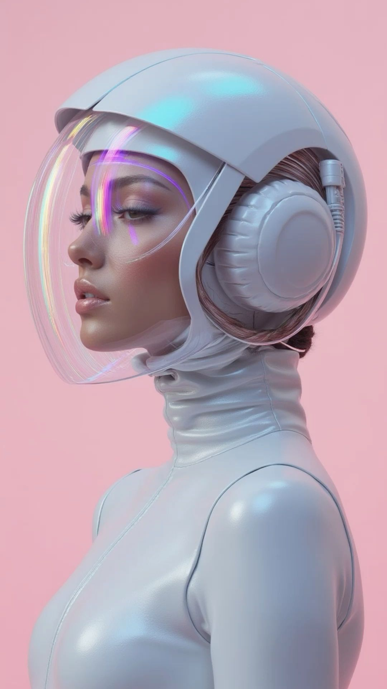
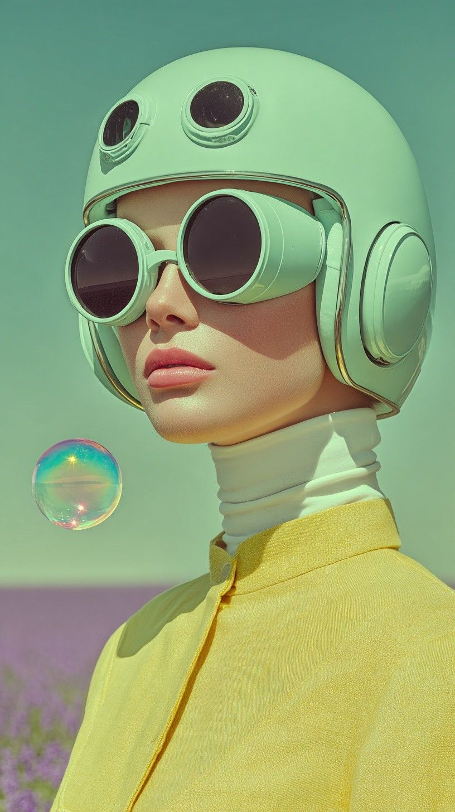
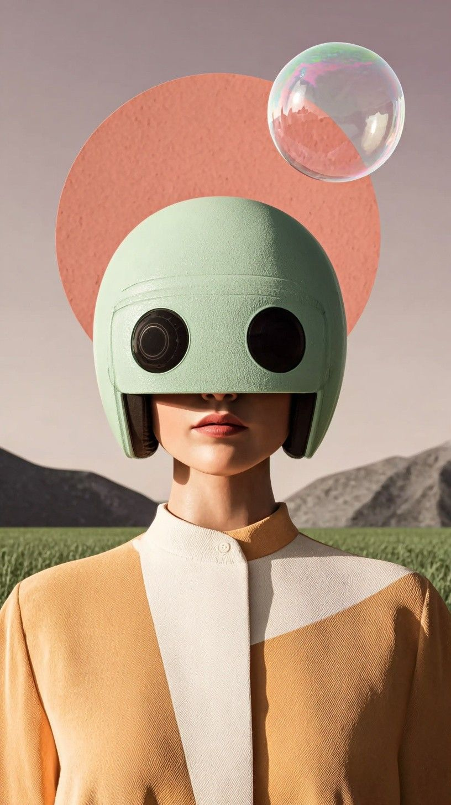
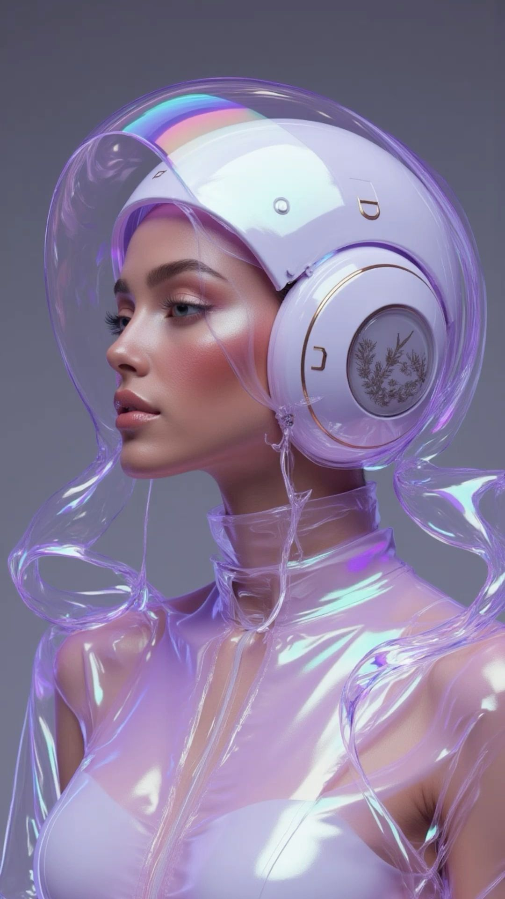
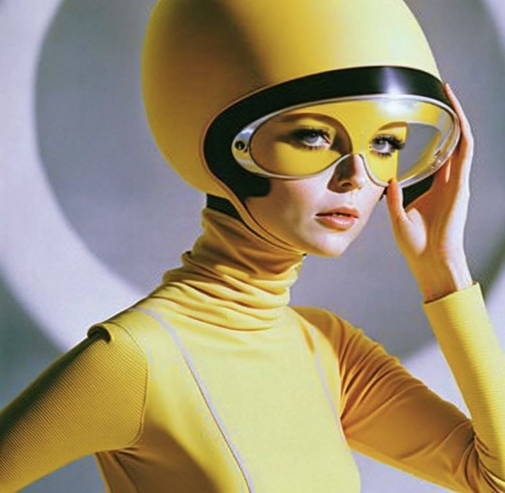
facing · facing:camera
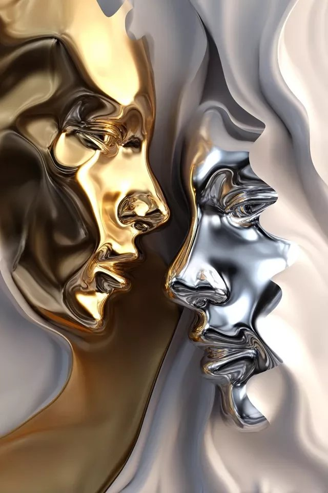
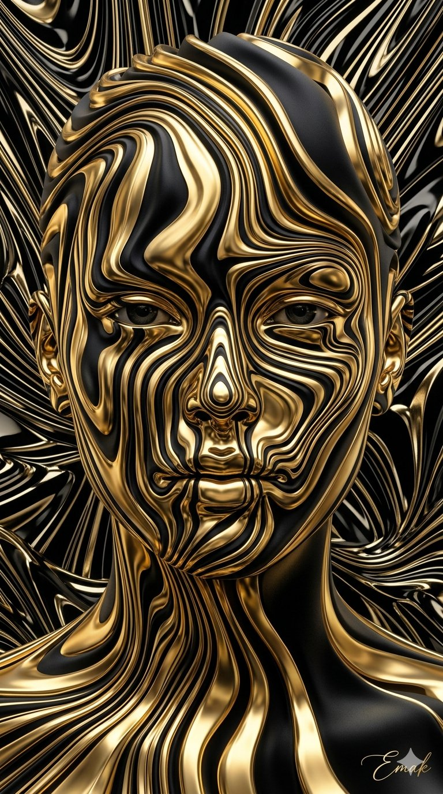
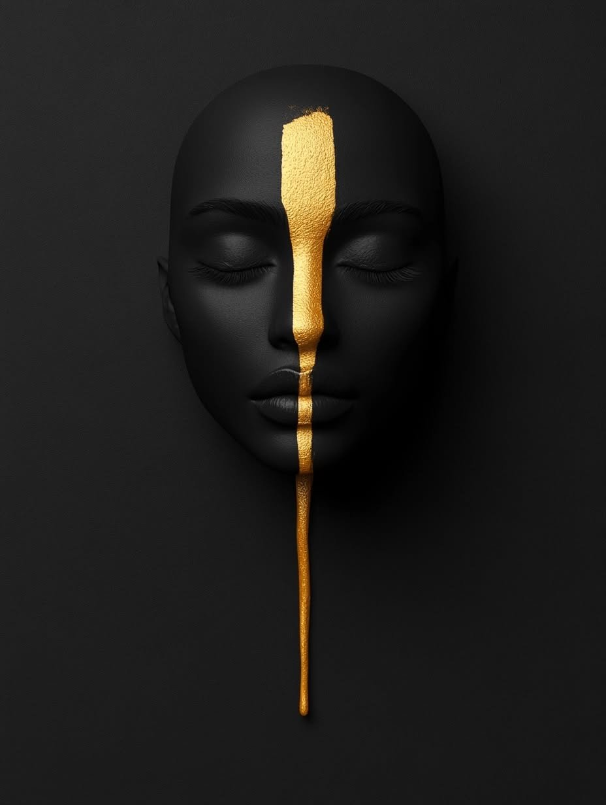
bottom · carousel-3d-low